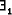

Upgrading from Spivey-Z or ESZ2-Z to ZETA-Z is relative easy, since
the type-checker will detect incompatibilities for you. The most
common problem is the use of primed schema names, S'. In Standard-Z,
the ' is part of a name. To refer to the operator ' which primes
all the names in a schema, it is necessary to put a space (soft, or
hard, ~) between the schema name and the ', as in S '
(S~'). You may also put braces around the schema name, such as
in (S)', to make the difference better visible in the type-setted
specification. The places where this fix is required are usually
flagged as type-errors by the type-checker. An other problem is that
is not allowed in predicates anymore. It can be replaced by

since abbreviation (==) are allowed in declarations now.
It should be noted that ZETA-Z has a few restrictions compared to the currently proposed Standard, and - what may be a more serious problem - has some extensions which are (currently) not part of the Standard. For a discussion of the restrictions and extensions, see Section 4.5.
Note: If you are upgrading from ESZ or older versions of ZETA, you do not need to place the directive
%%toolkit "zrm"in the preamble of your document any longer. ZETA 1.5 comes with only one toolkit, which is selected by default. This toolkit is compatible to Spivey-Z and the ZRM (which is also recommended by the Standard), with the restriction that it does not support bags any longer (as the Standard does not support them).